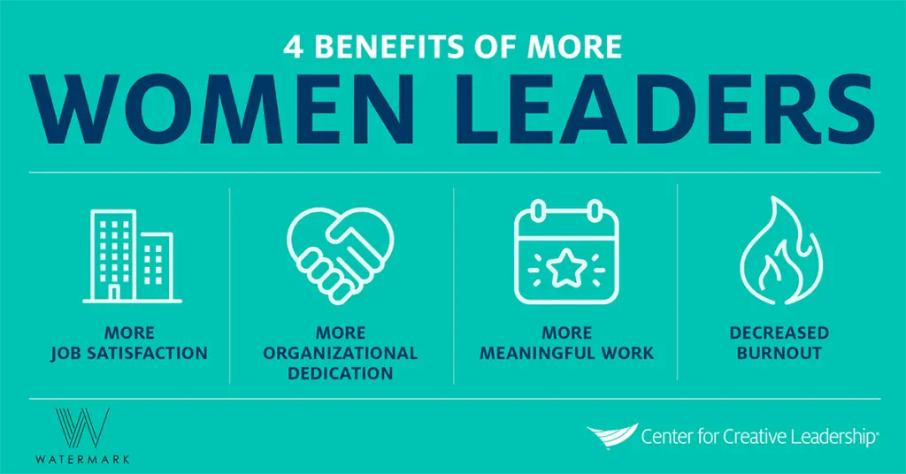
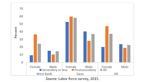

التدابير السياسية / الاقتصادية
من الأهمية بمكان اتخاذ تدابير سياسية واقتصادية لمعالجة هذه القضية ، لأنها ليست مسألة عدالة اجتماعية فحسب ، بل إنها ضرورية أيضًا لبناء مجتمع أكثر شمولاً.
نيويورك
لتعزيز النمو الاقتصادي وخلق المزيد من فرص العمل للنساء ، يمكن للحكومة تقديم برامج التمويل والتدريب والإرشاد للشركات المملوكة للنساء ، إلى جانب الصناديق والمنح المتخصصة. يمكن لهذه التدابير الاقتصادية أن تعزز مشهد أعمال متنوع وشامل في نيويورك.
فلسطين
نفذت السلطة الفلسطينية سياسات ومبادرات لتعزيز مشاركة المرأة في القوى العاملة ، بما في ذلك تحديد حصة جنسانية لتمثيل المرأة في وظائف القطاع العام وتعيين نساء في مناصب قيادية. ومع ذلك ، فإنه لم يحدث تغييرًا كبيرًا.
فلسطين

قامت المنظمات الدولية والمنظمات غير الحكومية بتنفيذ برامج لتمكين المرأة اقتصاديًا في فلسطين. ويشمل ذلك التدريب والموارد في مجال ريادة الأعمال ، ودعم الأعمال التجارية المملوكة للنساء ، وتعزيز الوصول إلى التمويل والائتمان الصغير. تكتسب هذه الجهود أهمية خاصة في المناطق الريفية ، حيث قد تكون الفرص الاقتصادية للمرأة محدودة.
نيويورك

يمكن للحكومة تعزيز التدابير السياسية لزيادة تمثيل المرأة في المناصب القيادية من خلال تنفيذ سياسات تشجع التنوع والشمولية في مكان العمل ، بما في ذلك برامج العمل الإيجابي. يمكن أن تساعد هذه التدابير في معالجة الحواجز المنهجية التي تمنع النساء من التقدم في حياتهن المهنية وخلق قوة عاملة أكثر تنوعًا وشمولية.